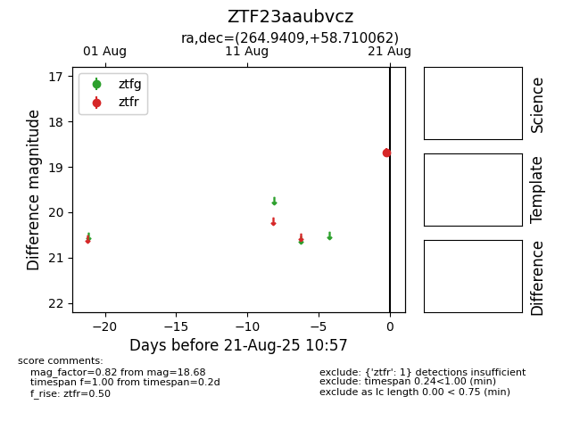

Target ZTF23aaubvcz at 2025-08-21 10:57, see:
FINK: fink-portal.org/ZTF23aaubvcz
Lasair: lasair-ztf.lsst.ac.uk/objects/ZTF23aaubvcz
ALeRCE: alerce.online/object/ZTF23aaubvcz
alt names
ZTF23aaubvcz (ztf,alerce)
coordinates:
equatorial (ra, dec) = (264.9409,+58.71006)
galactic (l, b) = (87.2302,+32.13216)
photometry
last ztfr=18.68
1 ztfr detections
